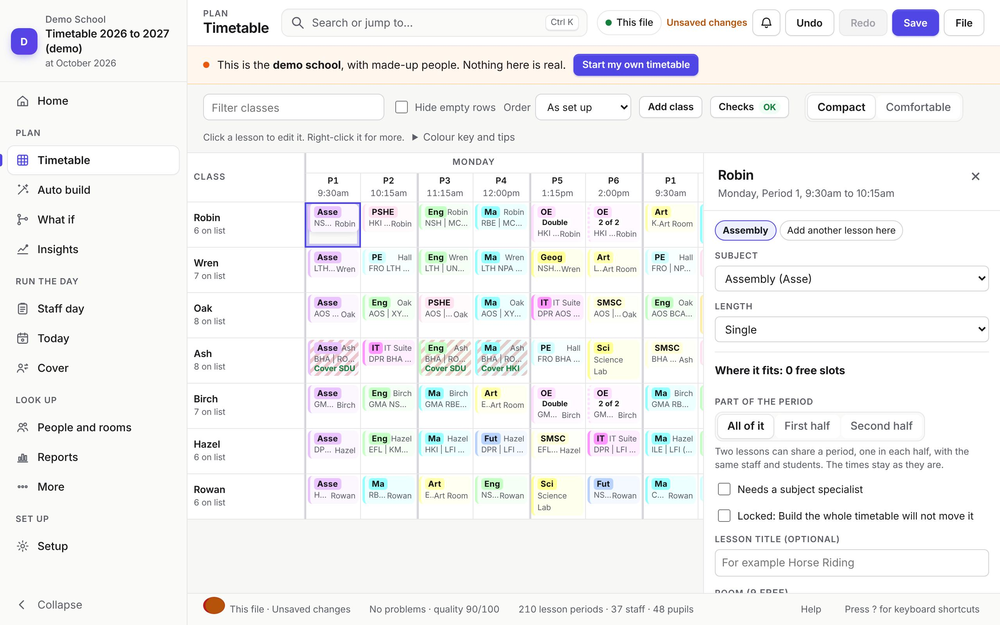
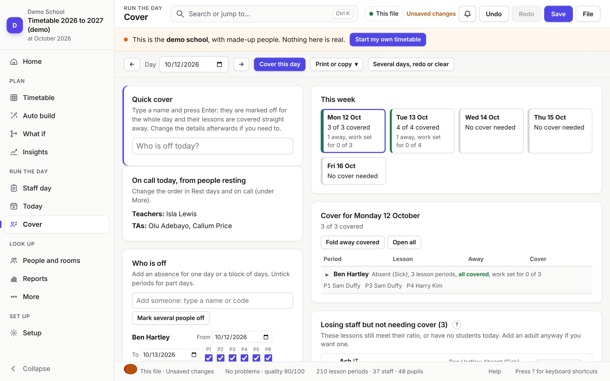

Your school's whole week, in one file.
Build the timetable, arrange cover and give every member of staff and every pupil their own timetable. It runs in your browser: nothing to install, no accounts to set up, and the data stays where your school keeps it.
The Builder opens with a demo school of made-up people, so you can try everything before adding your own.
Plan
- A grid you can work inDrag lessons to move them. The grid shows where a lesson fits and warns before anything clashes.
- Auto buildGive each group a weekly plan and let the Builder fill the gaps, keeping to your rules. You see the result before anything changes.
- Built for small groups and 1:1sTwo lessons in one period, a lesson for one pupil alongside the group, and PPA, ECT time and meetings blocked out in each person's week.
- What ifTry an idea in a working copy, compare it, and only then make it the real timetable.
- Print itOne A4 page per person, or the whole timetable on one sheet, for every site or one at a time.

Run the day
- Cover in one clickMark who is off and choose Cover this day. Cover is shared fairly, keeps to each person's limit, and never asks someone in their PPA.
- TodaySafety checks for the day: DSLs, first aiders and senior staff in, and pupils who are off.
- Telling peopleA ready-written message for each person whose day has changed, and one short summary of timetable changes for all staff.
- HomeWhat needs you today, with one button for each job.

Your data
- Kept where your school choosesIn the file itself, an Excel workbook, OneDrive or SharePoint, Google Sheets, or Dataverse in the Power Apps edition.
- No trackingNo analytics, no adverts, and nothing sent anywhere you haven't chosen.
- The provider's own sign-inMicrosoft 365 or Google sign-in when you use them. No passwords or keys are stored in the file.
- Editors and viewersChoose who can change everything, who can arrange cover, and who can only look.
- Pupils see only their ownEach pupil's Viewer file holds their own timetable and no other pupil's name.
- Subject access made simpleDownload everything held about one person, and remove old records on a date you set.
This website holds no school data: the demos use a made-up school. Keep your own timetable in your school's storage, not on this site.
Get started
- Open the Builder and look around the demo school.
Everything works, and nothing you do there is kept.
- Set up your school.
Step by step, or bring in an Excel workbook, the template, or a TimeTabler export.
- Choose where the timetable is kept, and save.
File, then Where your data is kept. Save a backup every week or two.
- Publish the Viewer for staff.
Setup, then Staff viewer. Publish again when the timetable or cover changes.
The downloaded file works offline: open it in Edge, Chrome or Safari.
Guides
- User guideEverything in the Builder, page by page.
- What's newThe latest changes, in short.
- Setting upYour first timetable, from start to finish.
- Staff ViewerGetting it onto staff phones.
- Pupil ViewerOne simple file for each pupil.
- Data protectionWhat is held, where, and for how long.
- For IT and adminsStorage, roles, backups and the Power Apps edition.
- AccessibilityKeyboard, screen readers, text size and contrast.
- Release notesEvery change, in full.